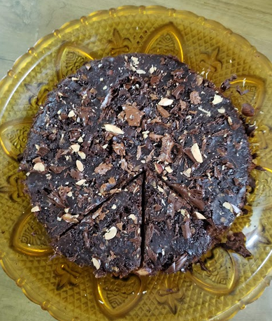
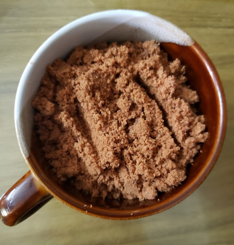

This food is a chocolate cake.This cake is my favorite food because it falls into the simple, delicious and timeless category. It’s crazy moist and super chocolatey and never lets me down. This is an easy cake to make, though one part of it always throws me for a loop.


Ingredients
- 2 cup biscuit's powder
- 1 cup milk
- 1 spoon baking soda
Method for making chocolate cake
- Preheat the oven to 325 degrees F (163 degrees C).🍵
- Line the bottoms of three 9-inch cake pans with parchment paper.😀
- Blend chocolate biscuits of your choice.😩
- Sift biscuit powder, baking soda, and warm milk together in a medium bowl.😕
- Mixed 3 additions until fully combined. Let mixer run for 5 minutes.😖
- Distribute the cake batter between the prepared cake pans.😫
- Bake in the preheated oven until a toothpick inserted into the center the cakes comes out clean, 30 to 35 minutes.🙈
- About 2/3 cup of frosting spread onto the cake for decoration🍮
- Cut and serve.😄